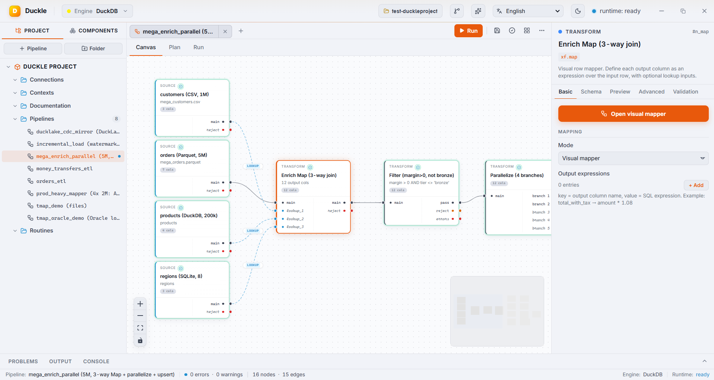
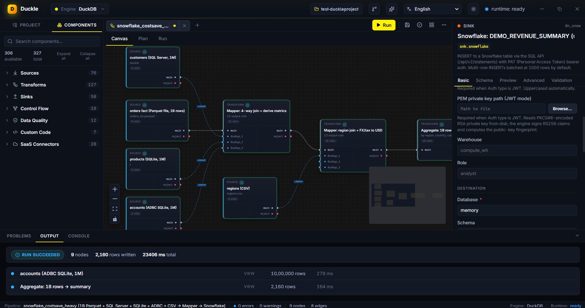
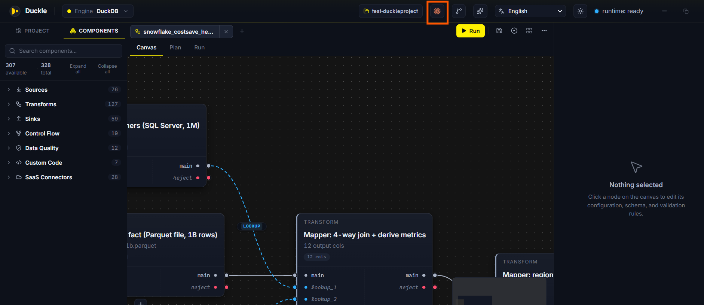

Every example below is an actual pipeline on the Duckle canvas, executed locally on DuckDB. The numbers are real run results, not benchmarks on someone else's hardware.

The problem. The data you need lives in different places: customers in a CSV export, orders in Parquet, the product catalog in a DuckDB file, regions in SQLite. Normally you would load all four into a warehouse just to join them.
In Duckle. Drop all four as source nodes and wire them into one visual Map - a 3-way join with per-output typed expressions (margin, tier, region rollups) and an inline filter status = 'ACTIVE' AND amount > 30. A Filter trims the result, then Parallelize fans it into category- and region-tier aggregates that write to DuckDB (upsert), Parquet and CSV simultaneously.
The problem. Multi-table joins with derived columns are the heart of ETL, and writing them by hand is where bugs hide.
In Duckle. The Visual Mapper shows the main input and each lookup on the left, every output column with its type and expression in the middle, and a function reference on the right. Drag to map a column, or write an expression like ROUND(main.amount - lookup_1.unit_cost, 2) for a margin. An inline filter applies to the whole join. Every mapping is type-checked live, and the node still emits plain SQL you can read in the Plan tab.


The problem. Warehouses bill for every scan. Producing a daily revenue summary from a billion-row fact table means paying for a billion-row scan, every day.
In Duckle. Read a 1-billion-row orders Parquet with products from SQLite, accounts over ADBC and regions as dimensions. Two Mappers enrich the orders and join regions; an Aggregate produces the daily revenue summary; the final node upserts only that summary into Snowflake (DEMO_REVENUE_SUMMARY) over the SQL API with PAT/JWT auth. The billion-row scan happens on your machine; Snowflake stores and bills for kilobytes.
The problem. Keeping a downstream copy in sync means applying inserts, updates and deletes - and reprocessing everything each run is wasteful.
In Duckle. Read a DuckLake CDC change feed and a customers feed, keep the latest change per order_id, enrich, and mirror into a DuckDB table with a universal MERGE. Deletes in the feed are propagated via the change-type column, so removed rows disappear downstream too. Watermark state advances only on a fully successful run, so the mirror is exactly-once even if a run fails midway.


The problem. Re-reading a whole table every run does not scale, and naive incremental logic silently skips rows when a run fails.
In Duckle. Point the Incremental node at a watermark column (here order_id). The first run loads everything and saves the high-water mark to the workspace; later runs read only rows past it and append to the DuckDB target. Crucially, the watermark advances only on a fully successful run - a crash or a partial preview never moves it, so you never lose rows.
The problem. You want an assistant to draft pipelines and to clean data for AI, without shipping your data or prompts to a third party.
In Duckle. Duckie runs Qwen 2.5 Coder locally through llama.cpp. Describe what you need; it streams a valid pipeline and a click drops it onto the canvas. For AI data prep, chain xf.ai.chunk -> xf.ai.pii -> xf.ai.embed -> xf.ai.dedupe and land vectors in pgvector or Pinecone - three of those transforms run with no API at all. Retrieve with local Vector Similarity Search and BM25 full-text search.


The problem. You want an LLM agent to author and operate real pipelines, not just talk about them.
In Duckle. The built-in MCP server connects Claude (or any MCP client) in one click. Over the protocol the model can list components, fetch a component's schema, create a pipeline (validated before it is written), validate, run it headlessly, read run logs, and even build a standalone executable. Secrets stay as ${ENV:KEY} placeholders, never hardcoded. The screenshot shows a 4-way-join Mapper pipeline driven through MCP.
The idea. DuckDB is the engine, DuckLake is the lakehouse, Quack puts it on the wire. Duckle is the tool that turns all three into a pipeline you can run and ship.
In Duckle. Raw podcast plays in an embedded DuckDB file are joined to an episode list (CSV) on a visual Map. The enriched stream lands in a DuckLake lakehouse (versioned Parquet, time travel), and a SQL mart is published two ways at once: to a remote DuckDB over Quack that apps can query live, and to a local DuckDB serving file. One DuckDB family, three storage shapes (embedded, lakehouse, remote), wired by drag-and-drop. Nothing left the laptop.